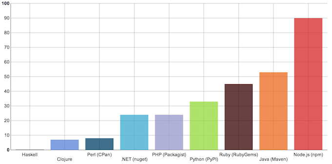
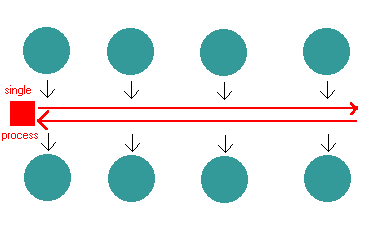

Node.js
JavaScript for Performance and Elegance
Created by James Wang / @wangbus
THE FOLLOWING
PREVIEW
HAS BEEN APPROVED FOR
ALL AUDIENCES
SO DON'T PANIC EVEN IF YOU'RE NEW TO NODE
JavaScript
Dislike of JavaScript is warranted but immature. It's the language of the web. If you're a technologist in the year 2013, learn to like it! HOWEVER, before you indulge...
Node's History
"innovation through modularity" Reference: Nodejitsu
- Since Dec '12 NPM has grown nearly 400%.
- NPM handles 390M requests per month.
- 32,000 packages from 20,000 authors.
Node is Crazy Awesome
Node.js and NPM are now growing at twice the rate over the rate of any other software platform today



Getting Started
Node HTTP server Hello World.
// Load the http module to create an http server.
var http = require('http');
// Configure our HTTP server to respond with Hello World to all requests.
var server = http.createServer(function (req, res) {
res.writeHead(200, {"Content-Type": "text/plain"});
res.end("Hello World\n");
});
// Listen on port 8000, IP defaults to 127.0.0.1
server.listen(8000);
// Put a friendly message on the terminal
console.log("Server running at http://127.0.0.1:8000/");
Common.js Modules
Node has a simple module loading system. In Node, files and modules are in one-to-one correspondence. Reference: Node.js API
EventEmitter Pattern
The event-emitter pattern is a observer/event pattern that many objects in Node implement. The pattern is used to facilitate the event-loop. Reference: Node.js API Event Loop
Streams API
A stream is an abstract interface implemented by various objects in Node. For example a request to an HTTP server is a stream, as is stdout. Streams are readable, writable, or both. All streams are event emitters.
- http responses, on the client
- http requests, on the server
- fs read streams
- zlib streams
- crypto streams
- tcp sockets
- child process stdout and stderr
- process.stdin
Readable Streams
- http requests, on the client
- http responses, on the server
- fs write streams
- zlib streams
- crypto streams
- tcp sockets
- child process stdin
- process.stdout, process.stderr
Writable Streams
Cool Stuff
- Real-time Web
- Reverse Proxies and Caching
- Streaming Video
- Decentralized Networking
Philosophy
"We should have some ways of connecting programs like garden hose--screw in another segment when it becomes when it becomes necessary to massage data in another way. This is the way of IO also."
Doug McIlroy. October 11, 1964 - Reference